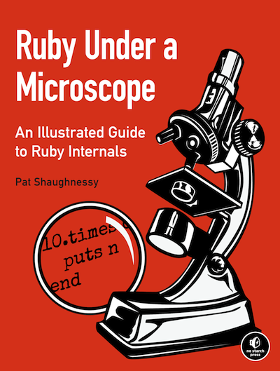

Some of these stuff...
attr_accessor
class WithDefaultReader
def attr_reader :something
end
class WithCustomReader
def something; @something; end
end
$ bench/attr_accessor.rb
WithDefaultReader:
1.010000 0.000000 1.010000 ( 1.021415)
WithCustomReader:
1.010000 0.000000 1.010000 ( 1.004239)
resqueretryReal men don't care about exceptions
They quack like hashes
fibs = -> x do
(x <= 1) ? 1 : fibs.call(x-1) + fibs.call(x-2)
end
fibs.call(20)
=> 10946
fibs[20]
=> 10946
str = "GB is not Great Britain"
# the usual way
match_results = str.match /(GB)/
match_results[1]
=> "GB"
str[/(GB)/, 1]
=> "GB"
What if we don't care?
class Post < ActiveRecord::Base; end
result = Post.find(1)
=> #<Post:...>
results = Post.find(1, 2)
=> [#<Post:...>, #<Post:...>]
results = Post.find(one_or_many_ids)
[*results].map do |post|
# ...
end
+, -, ! and ~ can be overriden
class Counter
def initialize
@value = 0
end
def +@
@value += 1
end
def -@
@value -= 1
end
def ~
@value
end
end
c = Counter.new
+c
+c
puts ~c # 2
How far can we go?
def m1(a, b=1) # correct
def m2(a=1, b) # correct
def m3(a, b=2, c) # correct
def m4(a=1, b, c=3) # wrong (optional args must be sequential)
def m5(a, b=2, *args) # correct
def m6(a=1, b, *args) # wrong
def m7(*args, c) # correct
def tail(*args, last)
last
end
# this actually works!
def m8(a, b=1, *args, d, e: 1, f:, **named_args, &block)
# blocks are almost as powerful (can't receive blocks, though)
define_method 'm9' do |*args, **named_args|
end
def m8(a, b=1, *args, d, e: 1, f:, **named_args, &block) # correct
define_method ' ' do
"this actually works!"
end
send(' ')
=> "this actually works!"
How do they work?
class MyClass
end
MyClass.ancestors
=> [MyClass, Object]
class MyClass
include MyModule
end
MyClass.ancestors
=> [MyClass, MyModule, Object]
class MyClass
include MyModule
include AnotherModule
end
MyClass.ancestors
=> [MyClass, MyModule,
AnotherModule, Object]
Module#prepend
class MyClass
prepend Prepended
end
MyClass.ancestors
=> [Prepended, MyClass, Object]
Where do all these methods go?
def m; end
Class MyClass
def m; end
end
Class MyClass
def self.m; end
end
Array.class
=> Class
[].class
=> Array
Array.singleton_class
=> <Class:Array>
[].singleton_class
=> <Class:#<Array:0x007f86d8d6e370>>
class Array
def self.m; end
end
def Array.m; end
class << Array
def m; end
end
class Array
class << self
def m; end
end
end
a = Array.new
def a.m; end
a = Array.new
class << a
def m; end
end
http://naps62.github.io/presentations
btw:
